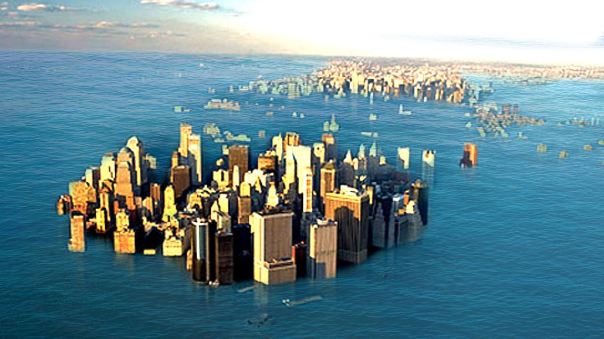
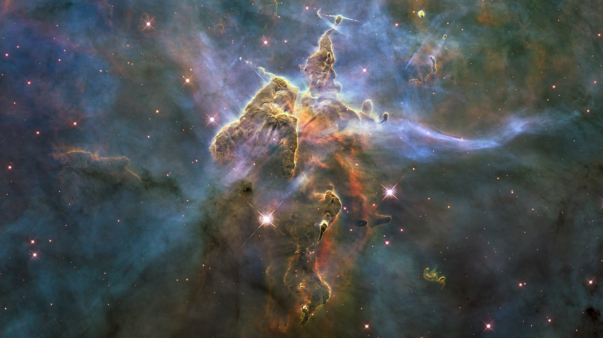
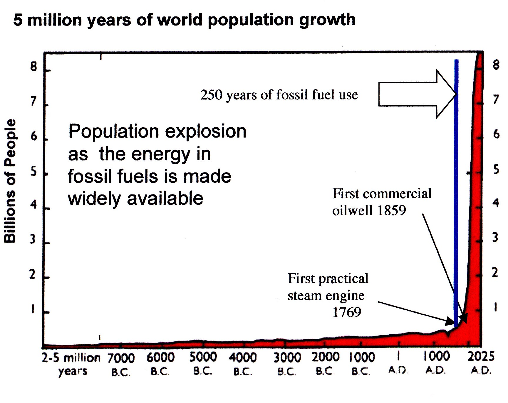
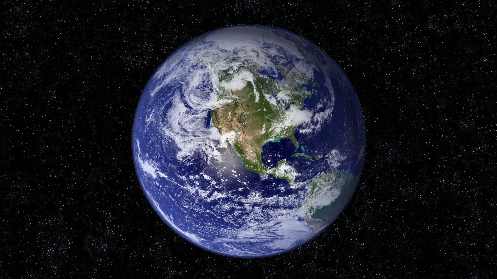

A THIN LAYER OF OILY ROCK
(Is all we’ll we be if we don’t wise up fast)

WHAT IS TRUTH?
- If a=b and b=c then a=c
- Pythagorean theorem: a2 + b2 = c2
- Fundamental constants: e, π, 0, 1
- Periodic table of elements
- Electromagnetism, gravitation, strong and weak interactions
- Differential survival of self-replicating entities (evolution)
- Mathematics: Euclid, Archimedes, Apollonius, Eratosthenes, Ptolemy, Fibonacci, Kepler, Galileo, Newton, Descartes, Fermat, Pascal, Leibniz, Euler, Lagrange, Laplace, Maxwell, Gauss, Reimann, Boole, Poincaré, Cantor, Gödel, Ramanujan, Einstein, von Neumann, Turing
SCIENCE IS THE ONLY VIABLE METHOD FOR OBTAINING TRUTH
- Scientific explanations of phenomena are valued according to their PREDICTIVENESS.
- Scientific predictions must be TESTABLE, and the predicted results must be REPEATABLE, especially by your scientific rivals who will be delighted to see you fail.
- Simplicity is also valued, but predictiveness outweighs it; given two explanations of a phenomenon, one that’s simple but less predictive, and another that’s complex but more predictive, the latter wins.
- Science has been tremendously successful at explaining phenomena predictively; no other human endeavor even comes close.
SCIENCE VERSUS OTHER ENDEAVORS
- SCIENCE
- Predictive explanations of phenomena
- NON-SCIENCE
- Bogus explanations of phenomena (pseudoscience, religion, etc.)
- Endeavors that don’t claim to explain phenomena (e.g. poetry)
NOTHING IS EVER PROVED TRUE; THINGS ARE ONLY PROVED FALSE
- The most predictive explanation of any given phenomena is considered PROVISIONALLY TRUE.
- If a better (more predictive) explanation is found, the previous explanation is either discarded (falsified), or absorbed into a more general explanation that explains a wider range of phenomena.
- Newton’s explanation of motion wasn’t falsified, and is still true within a given frame of reference. Newton’s work was absorbed into the larger explanation of general relativity, which handles special cases that Newton’s explanation couldn’t.
REALITY IS REAL
- “The moon is ‘out there’, even when no one is observing it.” –Einstein
- “Reality is that which, when you stop believing in it, doesn’t go away.”
- Our senses are unreliable and inadequate, especially at micro and macro scales; to grasp reality, we have to extend our sense organs with TOOLS (telescopes, microscopes, scientific method, induction, deduction, extrapolation, logic, mathematics, etc.)
- Our intuition is often wrong. Scientific explanations are frequently counter-intuitive and take considerable effort to understand.
- We are entitled to our own opinions but NOT to our own facts.
PRAGMATIC DEFINITION OF TRUTH
- “A theory that proves itself more successful than its rivals in predicting and controlling our world is said to be nearer the truth. This is an operational notion of truth employed by scientists.”
- “All life is problem-solving.” –Karl Popper
- “Inquiry … is self-corrective over time if openly submitted for testing by a community of inquirers in order to clarify, justify, refine and/or refute proposed truths.” –John Dewey
- There’s no shortage of serious problems, and our resources should be devoted to solving them. Given sufficient time and effort, people can and should make incremental progress towards shared goals.
SCIENTIFIC PRAGMATISM
There's stuff, in patterns. Patterns emerge from the stuff. Stuff emerges from the patterns. One or the other description may be more useful, depending on the goal. We differ from most stuff/patterns in an important respect: given sufficient time and effort, we can explain how stuff works with increasing accuracy. Our explanations are valuable because they allow us to correctly predict what stuff will do. Worrying about whether stuff is real wastes time that would be better spent understanding stuff. Stuff is real enough, and there's lots of it, and it's complicated and potentially lethal and moving fast, so there's no time to waste. This is the essence of pragmatism.
THE UNIVERSE IS VAST, MOSTLY EMPTY AND TOTALLY INDIFFERENT TO OUR FATE
- “The universe is infinite and chaotic and cold, and there has never been a plan. At least not until now.” –Root, “Person of Interest”
- “Out there in the icy universe… there’s nothing.” –Clive Langham, “Providence”
- The universe is HOSTILE: the rare parts of it that aren’t frozen and empty are full of inconceivably hot plasma, exploding stars, black holes, deadly radiation, etc.
- The images from the Hubble telescope make our predicament crystal clear, and are worth their enormous cost for this reason alone.

WE’RE STUCK ON EARTH WITH NO PLAUSIBLE HOPE OF ESCAPE
- “Like Prometheus we are bound, chained to this rock of a brave new world, our godforsaken lot.” –Dead Can Dance, “Black Sun”
- Wishing doesn’t make a thing so; “If wishes were horses, beggars would ride.”
- Escapism is increasingly indistinguishable from schizophrenia.
- Scientific truths are disturbing because they can’t be bargained with.
- We either face the harsh reality of our predicament or it kills us.
- There’s no time left for mysticism, spirituality, solipsism, or any similarly childish indulgences. We wake up or we die.
BIG NUMBERS ARE COMING TO GET US
- “The greatest shortcoming of the human race is our inability to understand the exponential function.” –Albert Allen Bartlett
- Unbounded growth is not physically realistic.
- Unchecked growth within your body is called CANCER.
- Growth of human impact on ecosystems is hyperbolic; this is much worse than exponential and means a singularity (like dividing by zero) will almost certainly occur and is probably imminent.
- “It is difficult to get a man to understand something if his salary depends on him not understanding it”. –Upton Sinclair

THE PLANET WILL BE FINE; IT’S WE WHO ARE IN DANGER
- “Save the Planet, Kill Yourself” is ABSURDISM. We couldn’t kill the planet if we wanted to. Even all-out thermonuclear war wouldn’t be enough; bacteria and insects would easily survive.
- During the 4 billion years life has existed on earth, knowledge has been encoded in the complexity and organization of living things. We are a product of that knowledge and it’s up to us to preserve it.
- If humanity disappeared today, in a few thousand years most of earth would look as if we had never existed. In a few million years the entire history of civilization would be reduced to a thin layer of oily rock.
- In mass extinctions, apex predators are the first thing to go.
ALREADY EXTINCT?
- “We don't understand the problem; we couldn't do anything about it if we did; and we wouldn't do anything about it if we could.”
- Minoru Kyo might be right on all three counts, and if so we’re toast.
- It’s up to us to prove him wrong, and our only hope for doing so is to become much more RATIONAL, COOPERATIVE, and ALTRUISTIC, very QUICKLY (drastic change of attitude within a single human lifetime).
- “The era of procrastination, of half-measures, of soothing and baffling expedients, of delays is coming to its close. In its place we are entering a period of consequences.” –Winston Churchill
MEANING COMES FROM US
- What a different world it would be if more people built their meaningfulness around something besides fairy tales and wishful thinking. If we devoted ourselves to objective reality as revealed by the scientific method we might have a chance of long-term survival.
- Humans may be an intelligent species. We'll soon see. If we're intelligent, we'll stop burning fossil fuels. If we decide to roast ourselves, bacteria inherit Earth a little ahead of schedule is all.
- We’re the only intelligent species on Earth, and also the only species that can choose to destroy itself. We can and should feel guilty about causing our own extinction because we’re capable of avoiding it.
OUR RATIONALITY IS WHAT MAKES US WORTH SAVING
- Our survival depends on the global uptake of rationality, which is a relatively new phenomenon and still fragile. Humans are either going to prioritize long-term survival, and cooperate rationally on a global scale to achieve it, or the future won't include us.
- We're primarily “saving Earth” for ourselves, so that the cultural odyssey in which we've invested so much time and energy can continue.
- Our aim is more than survival: it's to survive with dignity, while upholding our commitments to hard-won truths and principles. If we're saving Earth at all, we're saving it for future generations, so that they can fulfill our ambitions, by building a wiser and more enlightened society.
EARTH IN HUMAN HANDS: WHY SHOULD WE CARE ABOUT THE FUTURE?
- "The survival of the human species is not a preordained evolutionary program" –Joshua Lederberg
- For better or worse we’re the captains of our collective fate.
- Whether we should or shouldn’t keep earth habitable for ourselves (and nonhumans) is a purely ETHICAL question, not a scientific one.
- Only institutions—governments, corporations, schools, unions—have the necessary power to alter human consciousness quickly enough.
- Non-procreation and veganism are a good start, but nowhere near enough. Your real challenge is to infiltrate our institutions and reorient them towards long-term survival.
GO FORTH AND DON’T MULTIPLY: DO THE RIGHT THING AND FACE REALITY
- Our current trajectory isn’t merely an injustice to future generations, it’s an existential threat. Future generations can’t defend themselves, and won’t even get the chance to resent us; they won’t exist.
- Our situation is critical and requires full mobilization: “We don't have time for a meeting of the flat-earth society.” –Barack Obama
- The triumph of the irrational is rooted in a tragic failure of education. “Irrationality is like alcohol: adults should be allowed to consume it, but it should be clearly labeled. Disguised nonsense kills.” –Me
- I hope I’ve persuaded you that civilization is worth saving, in which case I urge you to struggle for rationality, cooperation and altruism.
HOME SWEET HOME
